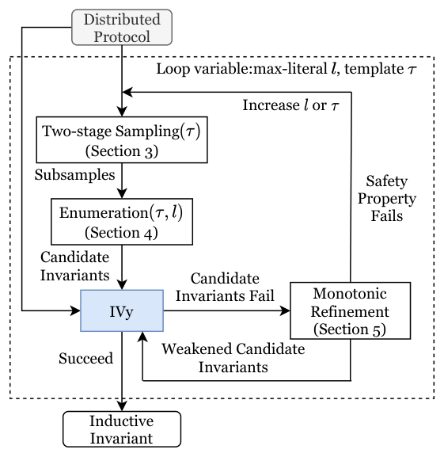
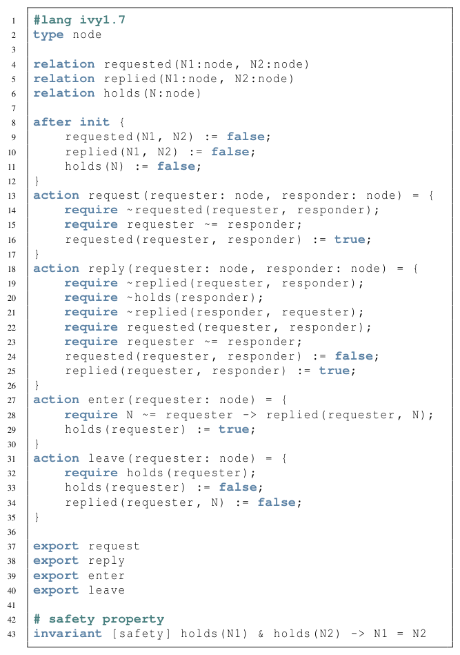
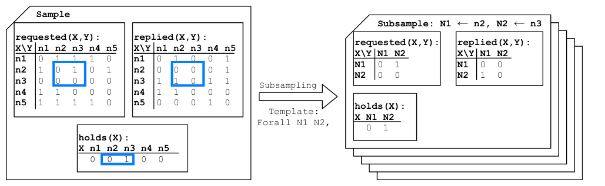
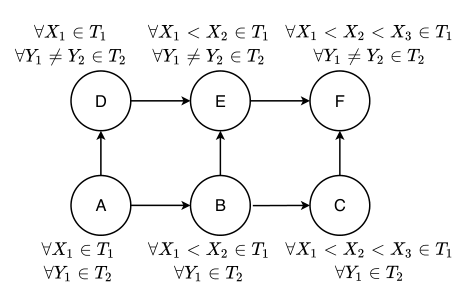
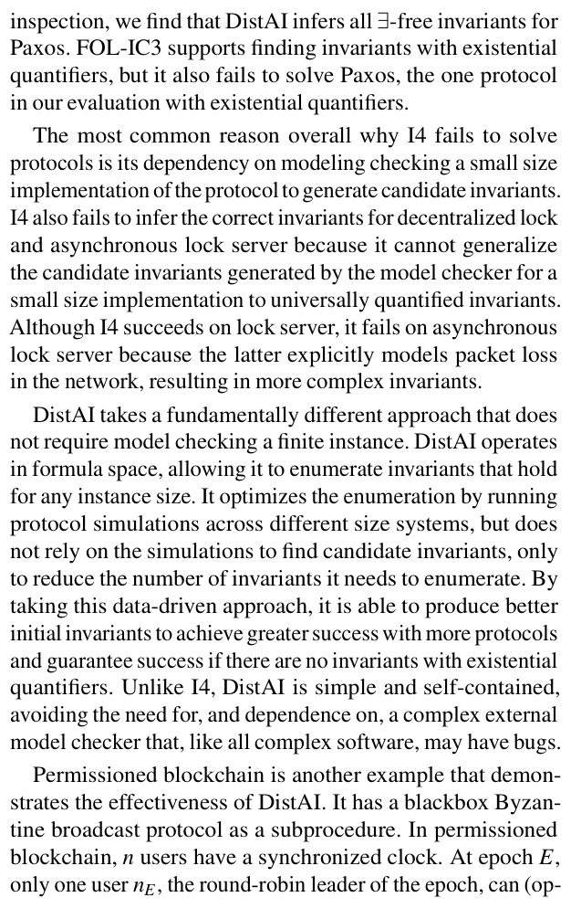
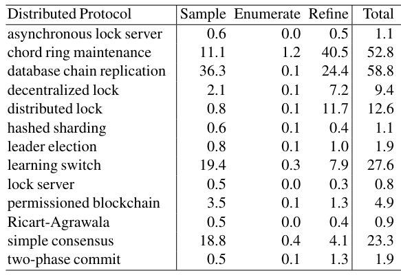
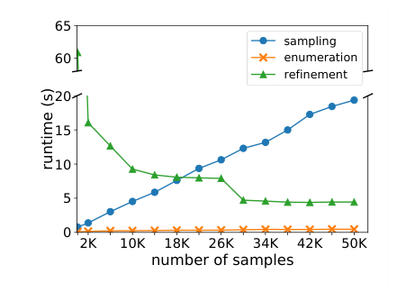

DistAI: Data-Driven Automated Invariant Learning for Distributed Protocols
This page was written by an AI model to give a high-level overview of the paper. Please check the paper for detail: USENIX.
Proving a distributed protocol correct means proving a safety property, such as "no two nodes hold a lock at the same time," holds in every reachable state. The standard strategy is to find an inductive invariant: a formula that holds initially, is preserved by every protocol action, and implies the safety property. Tools like IVy can check, with an SMT solver, whether a given set of formulas is inductive, but they do not find the formulas themselves. Writing them by hand takes substantial manual effort, even for a textbook protocol like Ricart-Agrawala mutual exclusion.
Prior automated approaches have real limitations. I4 model-checks one small, concrete instance of a protocol to generate candidate invariants, then generalizes them to hold for any instance size, but that generalization step is not guaranteed to work and sometimes fails outright; I4 also needs manual "concretization" to shrink the instance enough for model checking to be tractable, and cannot express existentially quantified invariants. FOL-IC3 searches directly in first-order formula space for a logical separator between reachable and unsafe states, which gives a strong theoretical guarantee but requires many expensive SMT queries, so it times out on protocols that are not especially complex.
DistAI's key observation is that inductive invariants for real protocols tend to be concise: because people must design and understand these protocols, the invariants they rely on typically use only a handful of quantified variables and logical conditions. DistAI exploits this by enumerating candidate invariants directly within a small formula size, rather than inferring them from one concrete instance or searching all of first-order logic with an SMT solver.
Mechanically, DistAI simulates the protocol (translated from its IVy specification into Python) at several instance sizes, recording reachable states as data samples, then projects those samples into fixed-size subsamples that match a candidate invariant's quantified variables. For each such formula size, it enumerates every strongest candidate invariant that is satisfied by all subsamples, exploiting symmetry and subset relations to avoid redundant work. These candidates, together with the safety property, go to IVy. If IVy accepts, DistAI is done; if it rejects some invariants, DistAI minimally weakens exactly those (adding one more literal), which it proves can never weaken past the true invariant, and retries; if even the safety property breaks, DistAI enlarges the formula size and starts over. This loop is guaranteed to terminate with a correct invariant in finite time whenever one exists without existential quantifiers.
Across 14 widely used distributed protocols, DistAI automatically finds the correct inductive invariant for 13, failing only on Paxos (which also defeats I4 and FOL-IC3). That is about 50% more protocols solved than I4 (9 of 14) or FOL-IC3 (3 of 14 by default, 9 of 14 restricted to universal quantifiers), and most protocols are solved in a few seconds, with every solved protocol finishing in under a minute, up to one to two orders of magnitude faster than the alternatives.

Key takeaways
- DistAI replaces manual invariant-writing or model checking with a data-driven pipeline: simulate the protocol, enumerate strongest candidate invariants, validate with IVy/Z3, and monotonically weaken only the formulas that fail.
- The core assumption is that inductive invariants are concise, so DistAI searches a small formula space directly instead of generalizing from one finite instance (I4) or repeatedly invoking an SMT solver over all of first-order logic (FOL-IC3).
- Because enumeration always starts from the strongest invariant set consistent with the simulated data, every refinement step is a provably minimal weakening, giving a finite-time convergence guarantee for existential-quantifier-free invariants.
- The SMT solver is used only to validate a pre-pruned candidate set, not to generate invariants, which avoids the expensive repeated queries that slow FOL-IC3 and the unsound generalization step that limits I4.
- DistAI solves 13 of 14 protocols (versus 9 for I4 and 3 to 9 for FOL-IC3), typically in seconds and never more than a minute, up to one to two orders of magnitude faster than the alternatives.
From a protocol specification to a checked inductive invariant
What an inductive invariant is, why finding one is hard, how DistAI samples and enumerates candidates, and how it refines and converges.
1 · Background: safety properties, inductive invariants, and IVy
Verifying a distributed protocol splits into proving the protocol itself has the desired safety properties, and proving an implementation matches the protocol. DistAI addresses the first part. A safety property is a formula that must hold in every reachable state, such as "no two nodes hold the lock at once." The typical proof strategy is to find an invariant that holds in the initial state and is preserved by every action; if that invariant also implies the safety property, the protocol is proved correct without enumerating reachable states one by one.

IVy specifications have five parts: types (domains such as node), relations (predicates over typed variables, such as holds(N)), an initial state, actions with require preconditions that define legal transitions, and the safety property itself. For Ricart-Agrawala mutual exclusion, the safety property holds(N1) & holds(N2) -> N1 = N2 is not itself inductive; proving it requires two additional invariants, that no two nodes have replied to each other (no bidirectional reply), and that any node holding the lock has received replies from every other node. Finding exactly these extra invariants is what DistAI automates.
2 · Why this is hard, and where prior tools fall short
Writing invariants by hand requires deep protocol-specific insight and can take a long time even for simple protocols. Two recent automated alternatives have different weaknesses:
| Tool | Approach | Limitation |
|---|---|---|
| I4 | Model-checks a small finite instance, then generalizes invariants to be universally quantified | Generalization is unsound in general; needs manual "concretization" to make model checking feasible; no existential quantifiers; model checker can run out of memory |
| FOL-IC3 | Repeatedly queries an SMT solver for a formula separating reachable from unsafe states, directly in first-order logic | Many expensive SMT queries; the default search space (including existentials) is large and the solver performs worse on it; can land outside Z3's decidable fragment and return "unknown" |
3 · The conciseness assumption and formula space
DistAI expresses invariants in prenex normal form: a prefix of quantified variables (an invariant template) followed by a matrix that is a disjunction of literals (a predicate or its negation), since any conjunctive invariant can be split into separate disjunctive ones. A formula size fixes the maximum number of quantified variables per domain and the maximum number of literals. Because this space is finite, DistAI can enumerate it directly rather than inferring formulas from one concrete instance, as long as it starts small and increases the size only when needed.
4 · Two-stage sampling: simulate, then project

DistAI translates the IVy specification into Python and simulates the protocol stochastically: it randomly selects an instance size near each domain's minimum required size, then repeatedly picks a random action with random arguments that satisfy its precondition, recording the resulting state as a data sample. This supports blackbox subprotocols too: if an action is specified only by pre/postconditions with no implementation, DistAI picks a random state satisfying the postcondition. Four parameters control sampling (maximum instances MI, maximum instances without new subsamples MIS, actions per simulation MA, subsamples per sample SD), left at defaults of 1000, 20, 50, and 3; the paper notes these affect only speed, not correctness.
Subsampling then projects each variable-length concrete sample onto a fixed-length vector matching the current invariant template, by mapping the template's quantified variables to concrete nodes (or other domain elements) in the simulated instance and extracting the associated relation values, as in the two-node projection shown in the figure. A bounded number of subsamples (SD) is drawn per sample to control cost, and sampling stops once MI instances are simulated or MIS consecutive instances add no new subsample.
5 · Enumerating the strongest candidate invariants

Naively enumerating all formulas up to the literal budget is expensive, so DistAI decomposes each invariant template into subtemplates, constrained slices of the template ordered from fewest to most quantified variables (for example, splitting {∀N1 N2} into N1=N2 and N1≠N2). Enumerating per subtemplate removes symmetric duplicates and, when a domain has a total order (such as node identifiers), lets DistAI additionally assume N1 < N2, which the paper reports cuts the literal budget needed for database chain replication from six to four.
- For each subtemplate, build a literal pool from its predicates and their negations.
- Enumerate combinations of up to the maximum literal count, smallest first, skipping any combination implied by an invariant already found (a weaker formula is never added once a stronger one covers it).
- Keep only combinations that hold on every subsample for that subtemplate.
- Project each found invariant onto successor subtemplates, so those larger subtemplates do not need to re-derive or re-validate implied formulas.
The paper proves (Theorem 1) that the resulting invariant set, for a given template and literal bound, is the strongest possible set consistent with the sampled data: any disjunctive invariant that fits within the same formula size and holds on all subsamples is implied by some invariant DistAI already found.
6 · Monotonic invariant refinement
The enumerated candidates and the safety property are fed to IVy, which calls Z3 to check whether their conjunction is inductive. If it is, DistAI is done. If IVy instead reports that some invariants are broken (false on some reachable state), DistAI removes exactly those invariants and replaces each with its minimally weakened versions, formed by adding one more literal, plus its projections onto successor subtemplates that had previously been skipped because the now-removed invariant implied them. The new set is checked again with IVy, and this repeats.
The paper proves (Theorem 2 and Corollary 1) that this process never weakens past the correct invariant: at every round, the current invariant set remains at least as strong as any invariant set that is consistent with the data and does not imply a broken invariant from an earlier round. In practice, DistAI first just removes a broken invariant and retries, only falling back to adding weakened versions, and then to full projection, if the cheaper steps fail, which saves SMT calls without breaking the guarantee.
7 · The formula-size feedback loop and convergence
If refinement exhausts all weakenings at the current literal bound and the safety property itself is violated, it means the correct invariant cannot be expressed at the current formula size. DistAI then increases the size, alternating between adding one more literal and adding one more quantified variable to a domain, and restarts sampling, enumeration, and refinement from scratch. Because any invariant uses a finite number of variables and literals, this loop is guaranteed to reach a sufficient formula size if the protocol's safety property is provable with an existential-quantifier-free invariant (Theorem 3); if it is not, DistAI can loop indefinitely.
8 · Implementation and scope
DistAI is implemented in 1.6K lines of Python (simulation and sampling) and 1.6K lines of C++ (enumeration and refinement). The Python translation of the IVy specification is not part of the trusted base, since every candidate invariant is still validated against the original IVy specification by Z3; a bug in the translation can at worst make DistAI incomplete, not unsound. Beyond plain predicates, DistAI also supports constants and function symbols as literals (for example treating X=c or Y=f(X) like any other predicate), and supports blackbox subprotocols specified only by pre/postconditions, which it used to verify a permissioned blockchain protocol for any correct implementation of its underlying Byzantine broadcast subprocedure. See the Evaluation tab for how these capabilities play out across 14 protocols.
Evaluation
What the paper measures, its key tables and figures, and what each one shows.
The authors evaluate DistAI on 14 widely used distributed protocols, including all 7 protocols previously used to evaluate I4, and compare against I4 and FOL-IC3 using the original authors' implementations of each.
| What | Value in the paper |
|---|---|
| Platform | Dell Precision 5829 workstation, 4.3GHz 28-core Intel Xeon W-2175, 62GB RAM, 512GB Intel SSD Pro 600p |
| Workloads | 14 distributed protocols from multiple sources (mutual exclusion, locking, leader election, consensus, blockchain, replication, etc.) |
| Baselines | I4 and FOL-IC3, each given up to 168 hours (one week) per protocol before timing out |
| Metrics | Number of protocols for which a correct inductive invariant is found; wall-clock time; number of refinement rounds; number of quantified variables and literals in the final invariant |
DistAI solves 13 of 14 protocols; I4 and FOL-IC3 solve fewer

What it shows. Table 1 lists, per protocol, the number of domains and relations, the final number of quantified variables and literals in the invariant found, the number of refinement rounds, the total number of invariants, and the time taken by DistAI, I4 (final-instance and total), and FOL-IC3 (default and universal-only settings). DistAI finds the correct invariant for 13 of 14 protocols, failing only on Paxos. I4 solves 9 of 14. FOL-IC3 solves 3 of 14 with its default setting, which searches all first-order formulas, and 9 of 14 when restricted to universal quantifiers only.
What to take from it. Even with up to a week per protocol, more than two orders of magnitude longer than the worst reported runtime, I4 and FOL-IC3 cannot match DistAI's success rate, roughly 50% more protocols solved. I4's failures mostly come from its model checker failing to generalize invariants from a small finite instance (asynchronous lock server, decentralized lock) or exhausting memory (Paxos). FOL-IC3's default-setting failures include Z3 returning "unknown" on formulas outside its decidable fragment (database chain replication, decentralized lock, distributed lock). DistAI's only failure, Paxos, is architectural rather than a resource limit: Paxos needs an existentially quantified invariant, which DistAI does not support.
DistAI is faster, and sampling or refinement, not enumeration, is the bottleneck

What it shows. Table 2 breaks DistAI's own runtime into sampling, enumeration, and refinement time, in seconds, for each of the 14 protocols. Enumeration is always cheap, at most about 1.2 seconds. Sampling dominates when action arguments are sparse or the subsample space is large, for example database chain replication (36.3 of 58.8 seconds total) and learning switch (19.4 of 27.6 seconds, where the three-variable template yields a subsample space of 2^60 possible bit vectors). Refinement dominates elsewhere, for example chord ring maintenance (40.5 of 52.8 seconds) and distributed lock (11.7 of 12.6 seconds). The text reports DistAI is about as fast as or faster than I4 on every protocol I4 solves except learning switch, up to an order of magnitude faster, and faster than FOL-IC3 on all but the two simplest protocols it solves, in many cases by one to two orders of magnitude.
What to take from it. DistAI's speed comes from using the SMT solver only to validate a small, pre-pruned candidate set rather than to generate invariants, avoiding I4's resource-intensive model checker and FOL-IC3's repeated heavyweight SMT searches. The one case where DistAI is slower than I4, learning switch, shows the cost of the data-driven approach when the relevant subsample space is large relative to what random simulation can cover quickly.
Sampling and refinement trade off against each other

What it shows. Figure 5 plots DistAI's sampling, enumeration, and refinement time for the simple consensus protocol as the number of simulated samples grows from about 2K to 50K. With very few samples, refinement must run many more SMT queries to patch missing corner cases and total time is much higher; as sample count increases, sampling time grows roughly linearly while refinement time falls roughly exponentially. The default sampling parameters produce 50K samples for simple consensus.
What to take from it. Sampling is purely a performance optimization, not a correctness requirement, because any gaps left by incomplete sampling are caught and repaired by monotonic refinement against IVy's SMT solver. Past a minimum sample threshold the two costs roughly balance; the paper also reports that varying the sampling parameters (actions per simulation from 25 to 100, subsamples per sample from 2 to 5) still solves the same 13 protocols, at worst three times slower than the defaults.
Blackbox subprotocols succeed; existential quantifiers are the hard boundary
What it shows. Beyond the table of runtimes, the paper separately discusses permissioned blockchain, whose Byzantine broadcast subprocedure is specified only by pre/postconditions with no executable implementation, and Paxos, the one protocol DistAI cannot solve. DistAI proves that for any Byzantine broadcast procedure satisfying agreement and validity, the resulting permissioned blockchain protocol satisfies consistency and a restricted liveness property (if the epoch-T leader is honest, all transactions before T are confirmed at T). For Paxos, DistAI's enumeration and refinement loop does produce existential-quantifier-free candidates, but because the correct invariant needs an existential quantifier, refinement never converges and DistAI keeps enlarging the formula size until it exhausts the one-week budget or memory.
What to take from it. Reasoning about a subprotocol purely from its specification, without a concrete implementation, is a capability I4 cannot offer, since I4 needs a concrete finite instance to model-check (it errors on blackbox reasoning). Paxos marks the clear boundary of DistAI's guarantee: it fails for a structural reason, not a performance one, and its failure mode (unbounded formula-size growth) differs from I4's (model checker runs out of memory) and FOL-IC3's (fails despite supporting existentials).
FAQ
Q·What is an inductive invariant, in plain terms?▾
A formula over the protocol's state that is true initially and stays true after every possible action, and that is strong enough to imply the safety property you actually care about. Proving those two things (true initially, preserved by every action) proves the property holds in every reachable state, without enumerating those states.
Q·Why isn't the safety property itself usually inductive?▾
An action can preserve the safety property only because some other, unstated fact about the protocol's history also holds. In Ricart-Agrawala mutual exclusion, "no two nodes hold the lock" stays true, but proving that the enter action preserves it requires also knowing that a node only enters after receiving replies from everyone else, and that two nodes cannot both have given each other a higher priority at once. These extra facts are the additional invariants DistAI finds.
Q·How is DistAI different from just running IVy?▾
IVy is the checker, not the invariant finder. Given a protocol specification and a set of candidate invariants, IVy uses the Z3 SMT solver to say whether their conjunction is inductive, and if not, which candidates fail. Before DistAI, a developer supplied the candidates by hand. DistAI automatically generates and refines them and calls IVy only to validate the result.
Q·How is DistAI different from I4?▾
I4 model-checks one small, concrete instance of a protocol to find invariants, then tries to generalize them to any instance size. That generalization is not guaranteed to work, and the paper finds cases where it fails. DistAI instead searches directly in the space of general formulas, using simulation data only to prune which formulas it needs to try.
Q·How is DistAI different from FOL-IC3?▾
FOL-IC3 also searches directly in formula space and can express existential quantifiers, which DistAI cannot. But it does so by repeatedly invoking an SMT solver to search for a separating formula, which is expensive and sometimes falls outside the solver's decidable fragment. DistAI uses the SMT solver only to check a small, pre-filtered candidate set, which the paper's experiments show is faster.
Q·What does it mean for DistAI to "start with the strongest possible invariants"?▾
Among all formulas that fit a given formula size and are consistent with the simulated data, DistAI keeps the most restrictive ones, those that imply every weaker formula in the same space. If the solver rejects one, DistAI knows for certain it needs weakening rather than discarding, and can show this property holds throughout refinement.
Q·What happens when IVy says an invariant is wrong?▾
DistAI removes exactly that invariant and replaces it with minimally weaker versions, formed by adding one more literal, plus its projections onto larger subtemplates that had been skipped because the removed invariant implied them. It then re-checks with IVy. The paper proves this cannot skip past the correct invariant.
Q·Why can't DistAI solve Paxos?▾
DistAI only enumerates universally quantified invariants. Paxos's correct inductive invariant needs an existentially quantified clause, so refinement never succeeds and DistAI keeps increasing the formula size until it runs out of time or memory. I4 has the same limitation; FOL-IC3 supports existentials but still fails on Paxos in the paper's experiments.
Q·Since the simulation never covers every state, how can the result be trusted?▾
Simulation is only used to prune candidates faster, not as the source of correctness. Every candidate is still checked against the full protocol specification by IVy's SMT solver, which reasons about all possible states. If sampling misses a corner case and produces a formula that doesn't actually hold everywhere, IVy catches it and refinement fixes it.
Q·What is a subtemplate and why bother with it?▾
A subtemplate adds constraints to a template's quantified variables, for example splitting {∀N1 N2} into N1=N2 and N1≠N2. Enumerating per subtemplate avoids redundant checks from symmetric variables, and lets a total-order optimization (e.g., N1 < N2 for node identifiers) reduce the literal budget an invariant needs, which the paper shows cuts it from six to four for database chain replication.
Q·Can DistAI verify a protocol that calls another protocol it doesn't have code for?▾
Yes. If a subprotocol is given only as pre/postconditions (a blackbox), DistAI simulates it by picking a random state satisfying the postcondition whenever its action is taken. This is how the paper proves a permissioned blockchain protocol correct for any Byzantine broadcast subprocedure satisfying agreement and validity, without needing a concrete implementation.
Q·What exactly is DistAI mathematically guaranteed to do?▾
If a protocol's safety property can be proved with an inductive invariant that needs no existential quantifiers, DistAI is guaranteed to find such an invariant in finite time. If the property requires existential quantifiers, or does not hold at all, DistAI may keep increasing the formula size indefinitely.
Q·Why does the paper assume invariants are "concise"?▾
Because people must design and understand distributed protocols well enough to implement and reason about them, their correctness arguments tend to use a handful of variables and conditions rather than arbitrarily large formulas. Most of the 14 protocols in the evaluation need only two or three quantified variables and two or three literals, with the largest needing four.
holds(N1) or ¬holds(N1), used as a building block of an invariant formula.